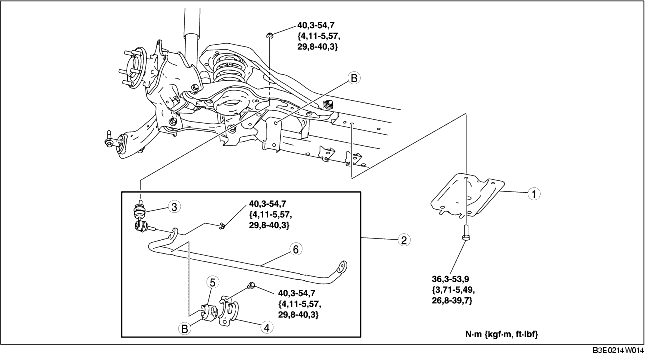

1. Déposer les différents éléments selon l'ordre indiqué dans le tableau.
2. Pour la repose, suivre l'ordre inverse de la dépose.

.
|
1
|
Support de barre transversale arrière
|
|
2
|
Composant de stabilisateur arrière
(voir la section Note sur la repose de composant de stabilisateur arrière.)
|
|
3
|
Fourchette de stabilisateur
|
|
4
|
Support de stabilisateur
(voir la section Note sur la dépose de support de stabilisateur.)
(voir la section Note sur la repose de support de stabilisateur.)
|
|
5
|
Bague de stabilisateur
(voir la section Note sur la repose de bague de stabilisateur.)
|
|
6
|
Stabilisateur arrière
|
1. Fixer le flanc du support de stabilisateur à l'aide d'un étau.
2. Déposer le support de stabilisateur.
1. Placer la bague de stabilisateur en orientant la projection vers la gauche du véhicule.
2. Élargir l'ouverture de la bague de stabilisateur de 16-26 mm {0,7-1,0 in}, et reposer la bague sur le stabilisateur arrière, comme indiqué dans l'illustration.
1. Appliquer de la graisse sur la bague de stabilisateur.
2. Reposer le support de stabilisateur à l'aide d'un étau.
1. Serrer les boulons selon l'ordre indiqué dans l'illustration.